Week 5 : Assignment
- make an in-circuit programmer by milling the PCB, program it, then optionally try other PCB processes ATtiny45
In week 5 we are introduced to electronics Production. we are asked to make our FabISP board. for that we need to learn how to design our circuit board, we are introduced to the printed circuit board (PCB).
Printed circuit board
The printed circuit board is basically a fiberglass board coated with copper traces ( paths on the PCB board which connects different components of circuit board like power, resistor, diodes ). Copper traces are an essential part in the design of PCB, you may have seen in circuit board every traces or copper wire are arranged in a nice manner, it is important because the length of copper wire controls time delay of communication.
Click Here! for more information.
PCB can be characterized by different layers:
- SINGLE-SIDED PCB
- DOUBLE SIDED PCB
- MULTILAYER PCB
- Rigid PCB
- Flex PCB
- Rigid-Flex PCB
Single Sided pcb
In Single-Sided PCB copper layer is coated only one side, in this type of board components and joints are connected only one side. Single-sided printed circuit boards are easily designed and quickly manufactured. They serve as the most cost-effective platform in the industry.

Benefits of Single Sided PCBs.
- Lower cost, especially for high volume orders
- Lower probability of manufacturing issues
- Popular, common, and easily understood by most PCB manufacturers
Double sided pcb
In Double-sided PCB copper layer is coated on both sides allowing connections on both sides of boards. Double-Sided PCBs (also known as Double-Sided Plated Thru or DSPT) circuits are the gateway to higher technology applications. They allow for a closer (and perhaps more) routing traces by alternating between a top and bottom layer using vias. Today, double-sided printed circuit board technology is perhaps the most popular type of PCB in the industry.

Benefits of Double Sided PCBs
- More flexibility for designers
- Increased circuit density(means large number of components in fix areas)
- Relatively lower costs
- Intermediate level of circuit complexity
Multilayer PCBs
in Multilayer PCBs circuit boards consists of more than two copper layers in which copper traces are inter connects two or different layers of circuit board, this boards are very useful for making multi-functional circuit boards. Unlike a Double-Sided PCB which only has two conductive layers of material, all multilayer PCBs must have at least three layers of conductive material which are buried in the center of the material.Benefits of multilayer Sided PCBs
- Higher assembly density
- Increased flexibility
- reduces overall weight
Rigid PCBs
There are different types of layers in pcb, so their inflexibility can vary. Rigid printed circuit boards use a solid, rigid substrate material like fiberglass that remains the board from twisting.
Benefits of multilayer Sided PCBs
- Compact Size
- Low Electronic Noise(link!)
- Immunity to Movement
flex PCBs
Generally, the substrate in a flexible board is a flexible plastic. This fundamental material permits the board to fit into forms that inflexible boards cannot & to turn or shift during use without harmful the circuits on the printed circuit board. Though flex boards tend to charge more to intend and create than rigid PCBs, they come with a number of advantages. For instance, they can restore heavy or bulky wiring in superior gear like satellites, where weight & space matter. Flex boards can also come in three formats, namely single sided, double-sided or multilayer formats.
Benefits of multilayer Sided PCBs
- Potential to replace multiple rigid boards or connectors
- Single-sided circuits are ideal for dynamic or high-flex applications
Rigid-flex PCBs
Rigid flex boards merge technology from both flexible and rigid circuit boards.An easy rigid-flex boards comprises of a rigid circuit board that joints to a flex circuit board. These boards can be more compound if design requests demand.Benefits of multilayer Sided PCBs
- flexibility to manufacture
- lightweight and compact
- integrates both rigid and flexible circuitry
- designed to be surface mounted easily on both sides
Sources
electronic components
An electronic component is any basic discrete device or physical entity in an electronic system used to affect electrons or their associated fields.They give the circuit the unique qualities that make it fit for its intended purpose. Depending on the device or electronic item a PCB is designed for, different components will be needed for different circuits. These components can consist of a wide range of electronic parts.Before understanding the different type of components its necessary to know the type of technology they are goning to be used in. The technology is classified into two types as follows.
Sources
- Surface-mount technology (SMT)
- Through-hole technology (tht)
Through-hole technology (tht)
In SMT Components are placed or mounted directly on the PCBs.In the industry it has largely replaced the through-hole technology construction method of fitting components with wire leads into holes in the circuit board.Surface-mount technology (SMT)
Refers to the mounting scheme used for electronic components that involves the use of leads on the components that are inserted into holes drilled in printed circuit boards (PCB) and soldered to pads on the opposite side either by manual assembly (hand placement) or by the use of automated insertion mount machines. Through-hole components are best used for high-reliability products that require stronger connections between layers.components
- Switch
- Resistor
- Potentiometer
- Light-Dependent Resistor (LDR)
- Capacitor
- Diode
- Light-Emitting Diode (LED)
- Transistor
- Relay
- Integrated Circuit (IC)
- Integrated Circuit (IC)
switches

Switches can come in many forms such as pushbutton, rocker, momentary and others. Their basic function is to interrupt electric current by turning a circuit on or off.
Resistor


Resistors are used to resist the flow of current or to control the voltage in a circuit. The amount of resistance that a resistor offers is measured in Ohms. Most resistors have colored stripes on the outside and this code will tell you it’s value of resistance. You can use a multimeter or Digikey’s resistor color code calculator to determine the value of a resistor.
Variable Resistor (Potentiometer)


A variable resistor is also known as a potentiometer. These components can be found in devices such as a light dimmer or volume control for a radio. When you turn the shaft of a potentiometer the resistance changes in the circuit.
Light-Dependent Resistor (LDR)


A light-dependent resistor is also a variable resistor but is controlled by the light versus turning a knob. The resistance in the circuit changes with the intensity of the light. These are often found in exterior lights that automatically turn on at dusk and off at dawn.
Capacitor

Capacitors store electricity and then discharges it back into the circuit when there is a drop in voltage. A capacitor is like a rechargeable battery and can be charged and then discharged. The value is measured in F (Farad), nano Farad (nF) or pico Farad (pF) range.
Diode


A diode allows electricity to flow in one direction and blocks it from flowing the opposite way. The diode’s primary role is to route electricity from taking an unwanted path within the circuit.
Light-Emitting Diode (LED)

A light-emitting diode is like a standard diode in the fact that electrical current only flows in one direction. The main difference is an LED will emit light when electricity flows through it. Inside an LED there is an anode and cathode. Current always flows from the anode (+) to the cathode (-) and never in the opposite direction. The longer leg of the LED is the positive (anode) side.
Transistor
Transistor are tiny switches that turn a current on or off when triggered by an electric signal. In addition to being a switch, it can also be used to amplify electronic signals. A transistor is similar to a relay except with no moving parts.
Relay


A relay is an electrically operated switch that opens or closes when power is applied. Inside a relay is an electromagnet which controls a mechanical switch.
Integrated Circuit (IC)


An integrated circuit is a circuit that's been reduced in size to fit inside a tiny chip. This circuit contains electronic components like resistors and capacitors but on a much smaller scale. Integrated circuits come in different variations such as 555 timers, voltage regulators, microcontrollers and many more. Each pin on an IC is unique in terms of its function
Schematic Diagram

When working with circuits, you will often find something called a schematic diagram. These diagrams use symbols to illustrate what electronic components are used and where they’re placed in the circuit. These symbols are graphic representations of the actual electronic components.
pcb milling
Printed circuit board milling (also: isolation milling) is the process of removing areas of copper from a sheet of printed circuit board material to recreate the pads, signal traces, and structures according to patterns from a digital circuit board plan known as a layout file.I started with learning ROLAND MDX-20 circuit milling machine!
STEP 1: Learning to use Roland milling machine
we have Roland MDX-20 for pcb milling. Roland Mdx -20 is able to do many operation like 3d milling, 2.5d cut and simple 2d cutting. it can support mant type of file like DXF, VRML, STL, IGES, Grayscale, BMP. secifications are written below.

Click here to know source of image.
SPECIFICATIONS:
XY Table size : 220mm * 152.4mm * 60.5mm
interface : Serial (RS-232c) hardwere flow control

Modeling function
TOOl chuck : 6 mm
Spindle motor : 10W
Softwere resolution : 0.025mm/step
Mechanical resolution : 0.00625mm/step
RPM : 6000 rpm
Feed rate : 0.1 mm to 15mm/sec
Export file formats : DXF,VRML, STL, IGES, Grayscale, BMP
Acceptable tool : Endmill, Drill
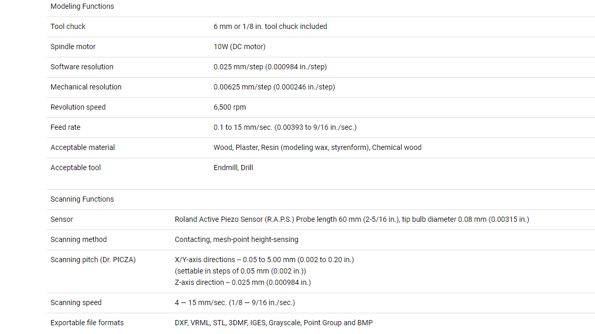
CLICK HERE FOR MORE
STEP 2: Controls

These are the controllers of the milling machine.
START: to start the Machine
VIEW: by clicking view machine went to its origin.
UP AND dOWN controls: to control tools vertical position (Z axis)
Cutting tools
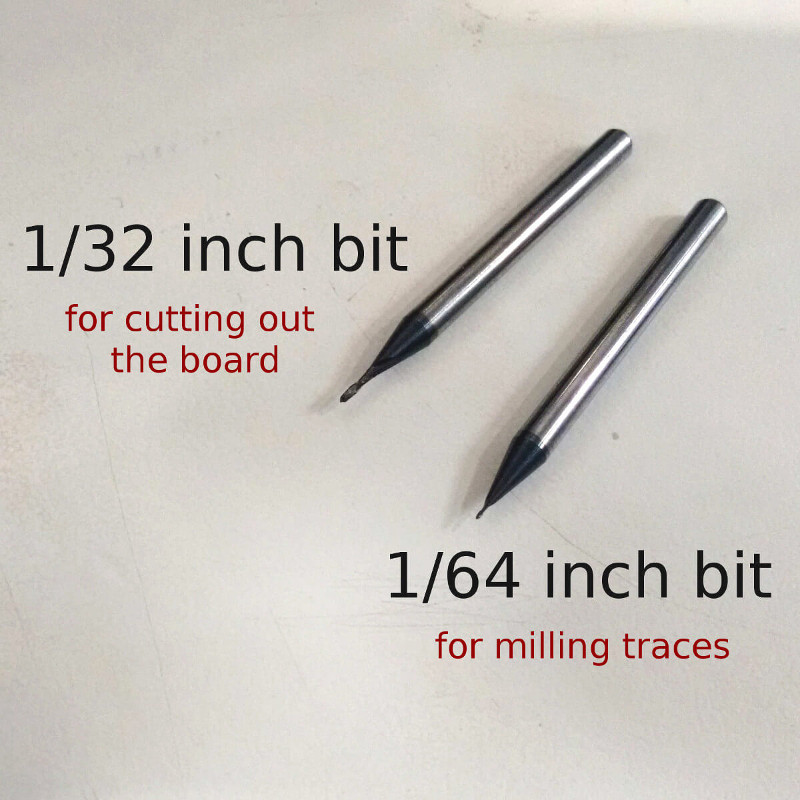This are two main cutting tools we used for tracing and Cutting
Fixing tool with machine

In milling machine key is used to fix the tool in the rotating shaft, since milling machine rotates about 6500 rpm it is Dangerous to keep it loose.
Some terminology:
Tracing:
In circuit design, Tracing is clearing the unnecessary portion in circuit board, portion without copper paths called Traces
Cutting:
Cutting is process of simply cutting the border of the designed circuit to make it apart from board in end of circuit design
Below is example of png image ( ISP ATTINY 45 ) designed by Brian

In png files whole milling machine works on principal of monochrome.. machine will generate tool path on basis of Black and white inteersection , on the edges of black and white colors machine will cut and it will only cut towards black color if some offset is given on settings , Thats why traces should always be in white one.
STEP 3: Design of ISP(In-system programming) board
What is ISP ?
The FabISP is an in-system programmer for AVR microcontrollers, designed for production within a FabLab. It allows you to program the micro-controllers on other boards you make.
PNG image of FAB-ISP board
ORIGINAL FILES : PNG FILE for tracing, PNG File got Cutting , BOARD Diagram, >SCHEMATIC diagram

This board contains ATTiny 45 micro controller with six head ISB pins
Board diagram of circuit

schematic diagram of circuit

STEP 4: Making PSB using fab-modules : TRACING operation
I have used linux base system for my PCB milling. to run the fab modules , your machine should have some things preinstalled , click here for guidnce. I've posted work of fab-modules here
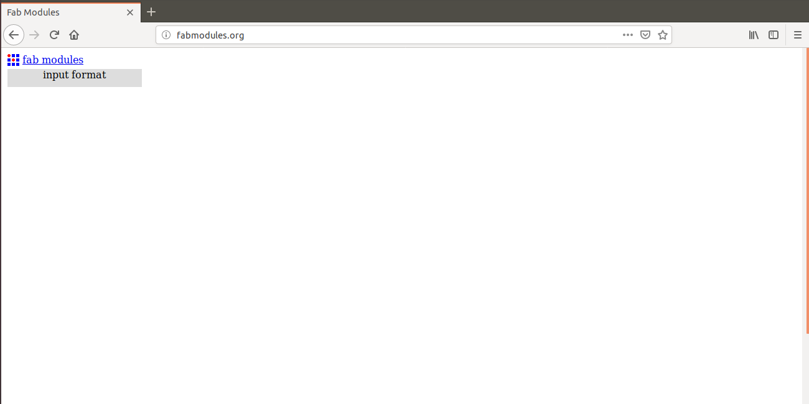Import .png Image
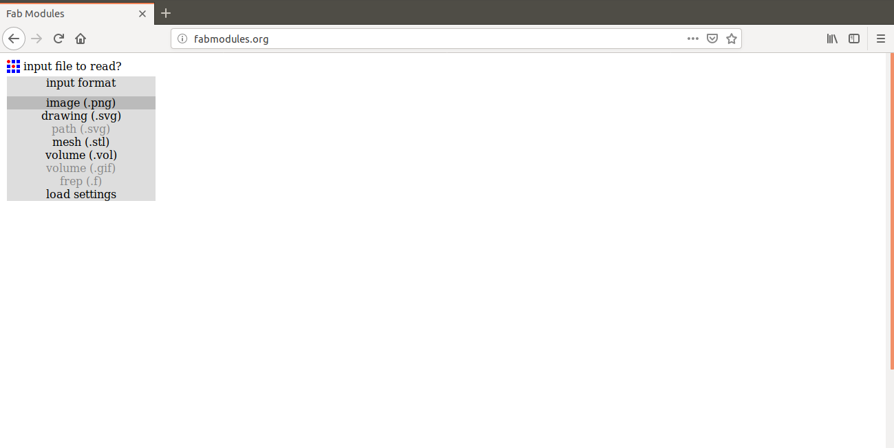 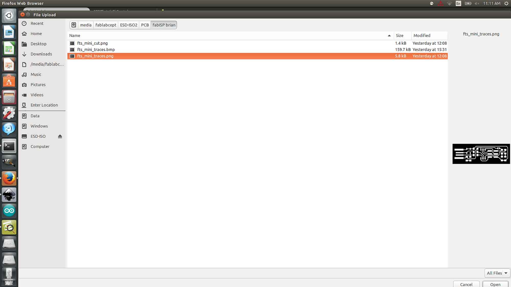Output format
Set output format to .rml

Machine set to MDX-20

These are the other settings to keep in machine, for Tracing this images are fine, but it can be different for machine to machine depending on coper cover on the board
Climb - it give ability to Tool for moving in z direction and start cutting from one perticular side, it is favorable.Cut depth - Cut depth is how deep you want your tool to go in the Fiber-copper board. 0.1 is good for tracing operations and 0.6 is good for cutting operationsTool Diameter - Write tools diameter Number of offset - It decides How Many times tool will pass from that paths keeping some offsets Offset overlap - Offset overlap is value given to the tool path to overlay the cutting portion. If i'm giving 80% overlap then tool will pass 80% of the portion of cut area. Only 20% new area will be cutNumber of offset feature
Number of offset is important feature in pcb milling , it will determine how much copper will cut around the trace so it will define the time limit also. keeping offset sometimes cause thinner traces because it can effect adjacent traces thought it will never show on preview. below is gif of decreasing the offset from 4 to 1and observing the toolpath around traces.

Number of offset value : 0 or -1
when number of offset will be 0 or -1 , it will trace on the whole black are , see below
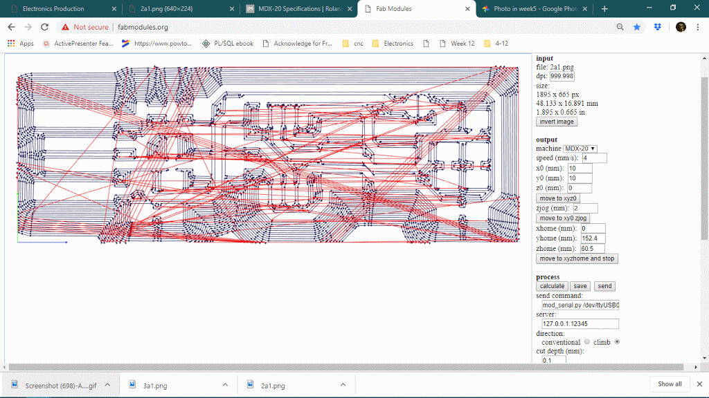Offset overlay
Offset overlay is great feature also , it will reduce the cut area , but it will give more clean cut it it increased. see below decreasing the offset overlay will Increase chances of uncut material on board because adjacent tool path will go far from each other. Offset overlay is meassure of milling bit diameter.
Settings for 1/64 bit
cut depth : 0.1Tool diameter : 0.4mm
Offset : 4
overlap : 50 %
And then click calculate
after calculating it will generate path from Online server and creates images like this
Click send to Cut the traces on the board.Remember! you have to set one origin first from where you want to start your
cutting.
See below

Tracing starts :
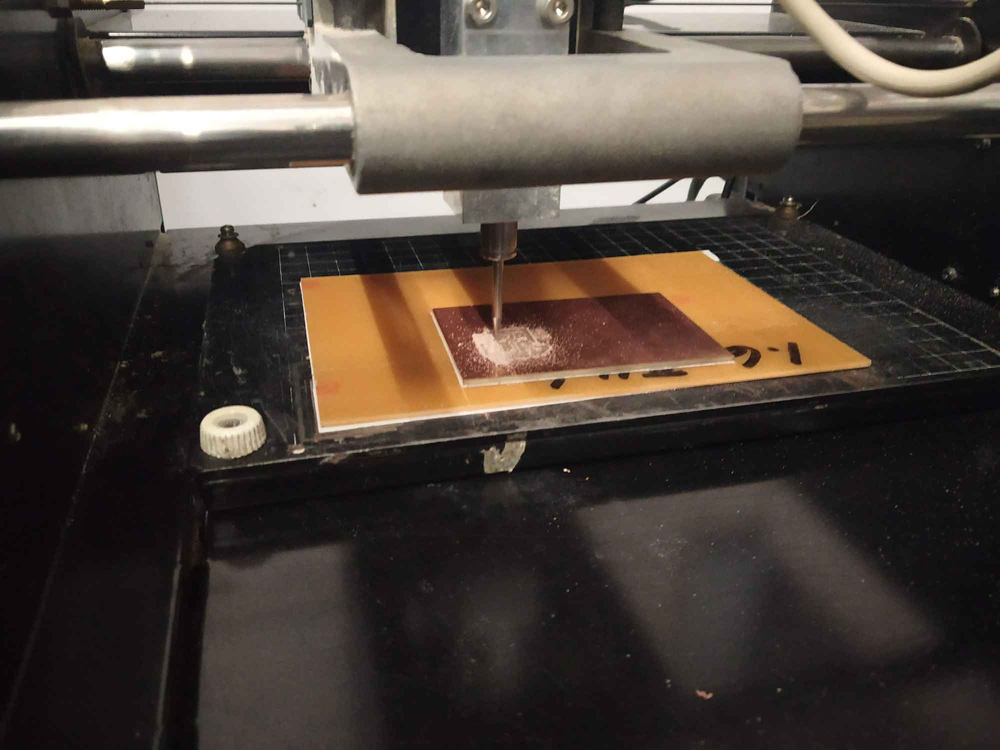STEP 5: Cutting operation on Copper board
importing image for cutting The Board
change the tool to 1/32
cut depth : 0.6
Tool diameter : 1/32
Offset : 1
overlap : 50 %
Here! you have to give same X and Y positions you gave in Tracing.
 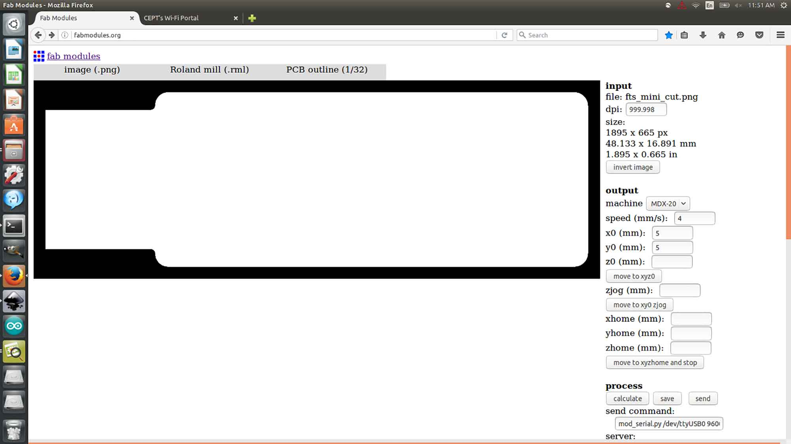
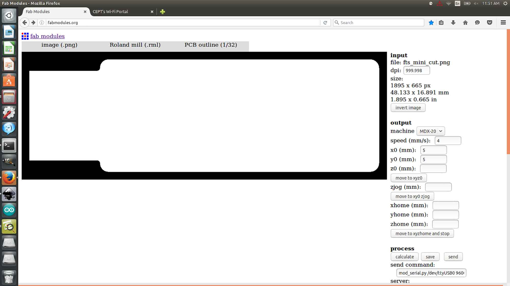
Step 6 : OUTPUT

STEP 7 : solder Time
Tools :
solder : material for joining the components to circuit board is [matTooltipPosition]="above"
solder-iron : it is used to melt the solder-coil
solder-iron stand : for placing solder iron at safe place
solder-wick : to remove the extra solder from board
Tweezers : To place the components in circuit board
Components for Fabtinyisp :
 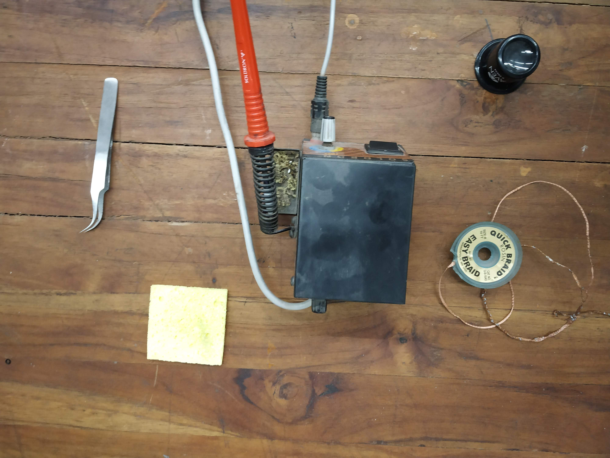
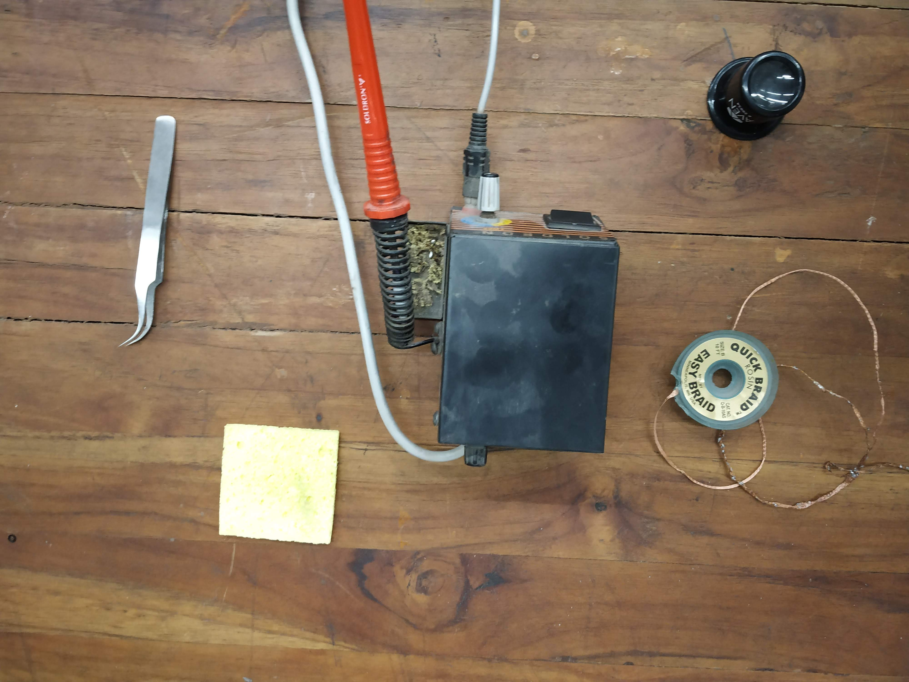
solder

Components
ATtiny45 microcontroller 3.3v Zener diodes * 2 1K Ohms register * 2 499 Ohms register * 1 49 Ohms register * 2 LEDs * 2 6 Pin header
soldering process:
I am demostrating how to do solder here , i was doing solder on vinyl cut psb one that my friend Samuil made. but i was not strong enough and broke, you can still learn to solder below.
First melt solder on coper path
To melt solder, Heat coper path with iron and then Let solder be in contact with copper, copper will melt it. It is not good practice to have direct contact between solder and solder-iron. iy vaporized solder and go inside of our body by breathing it.

Place BIG> components first
Always place big components or components which have specific orientation FIRST !, solder only one pin of the micro-controller first

Orient after soldering one pin

Then place solder on the second pin

Then solder small components
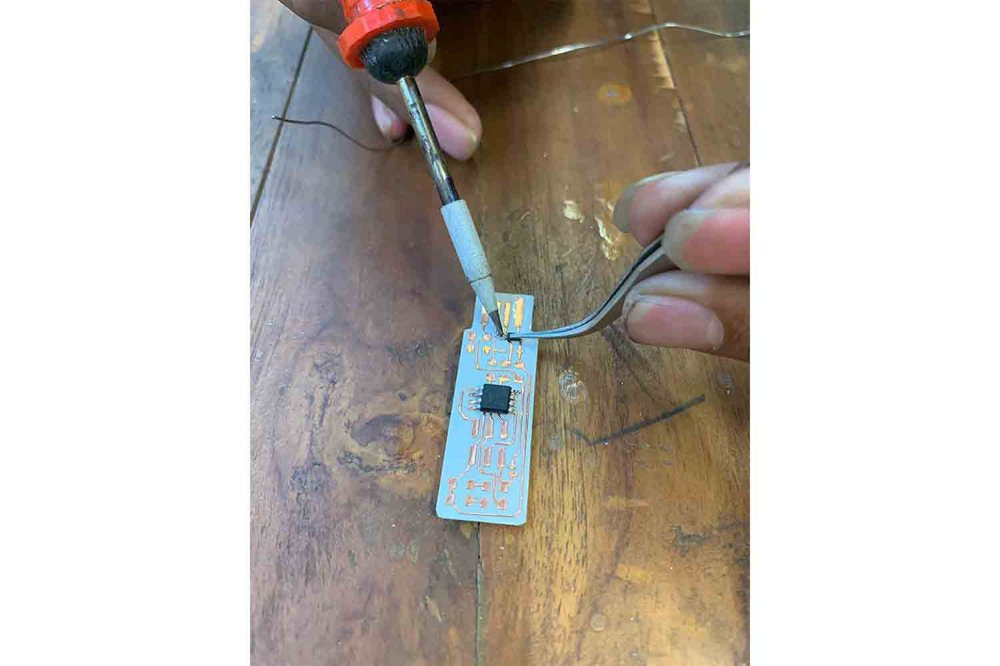solder One side then Align and then give solder to another side.

Don't forget soldering the remaining pins of Micro-controller

STEP 8 : ISP-board is ready
After solder my copper board i was able to make my ISP
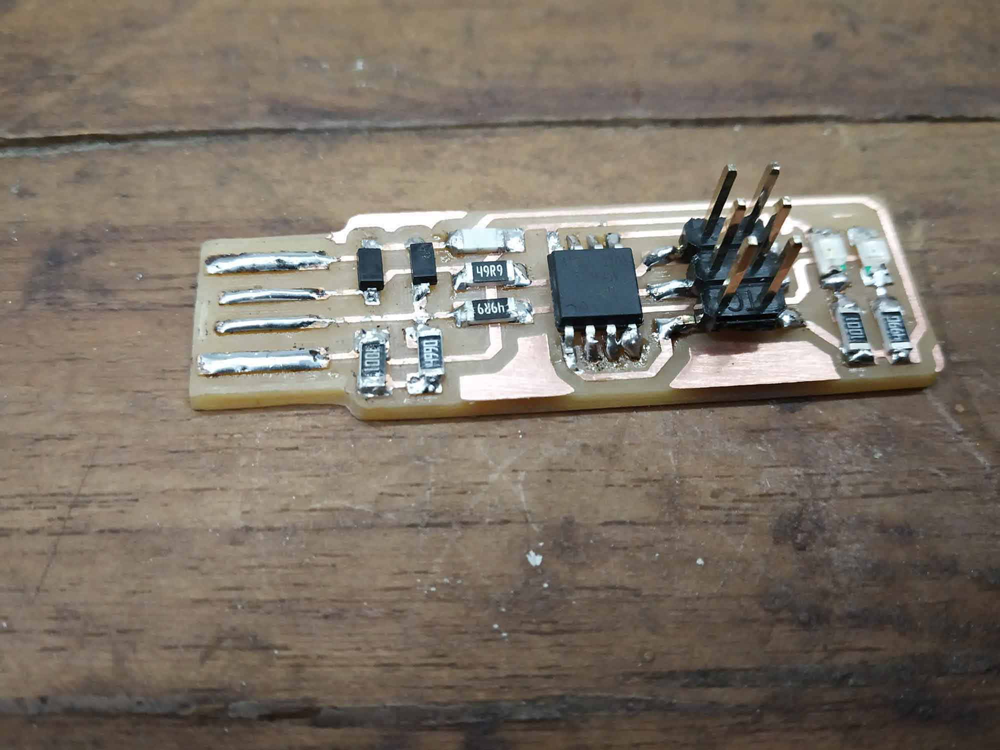After doing few times(Days) i was becoming good at soldering
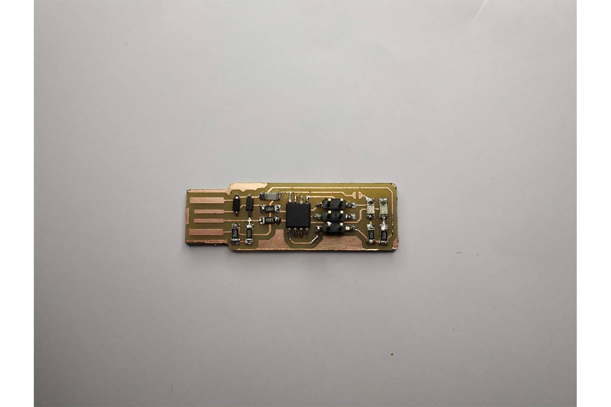
It was quite good experience. It was first time i did solder :). big help from my friend Samuil.
STEP 9 : removing extra solder coil
removing extra Tin with copper wick ! after solder it was time for removing the extra solder coil from circuit to avoid short-circuit ! it is good practice to do.

STEP 10 : Validating circuit (SMOAK TEST! & BUZZER TEST)
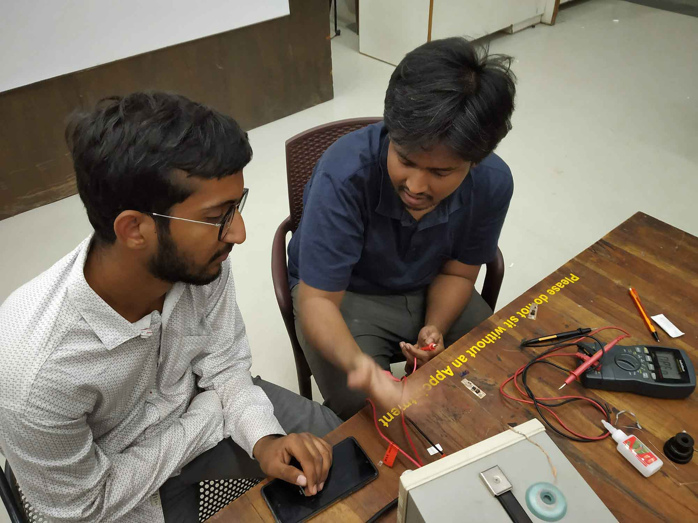Samiul teaching us How to use instrument for validating our Circuits.

With these instrument we check the whole circuit for any trace of short-circuit. this test should not be done before buzzer test, after passing buzzer test(No buzzer means circuit is good for power checking)

by placing two connectors in power and ground, i checked for any leakage or short, if circuit is not fine, it will be red light beclow on instrument. See BELOW, if light is green your circuit is SAFE.
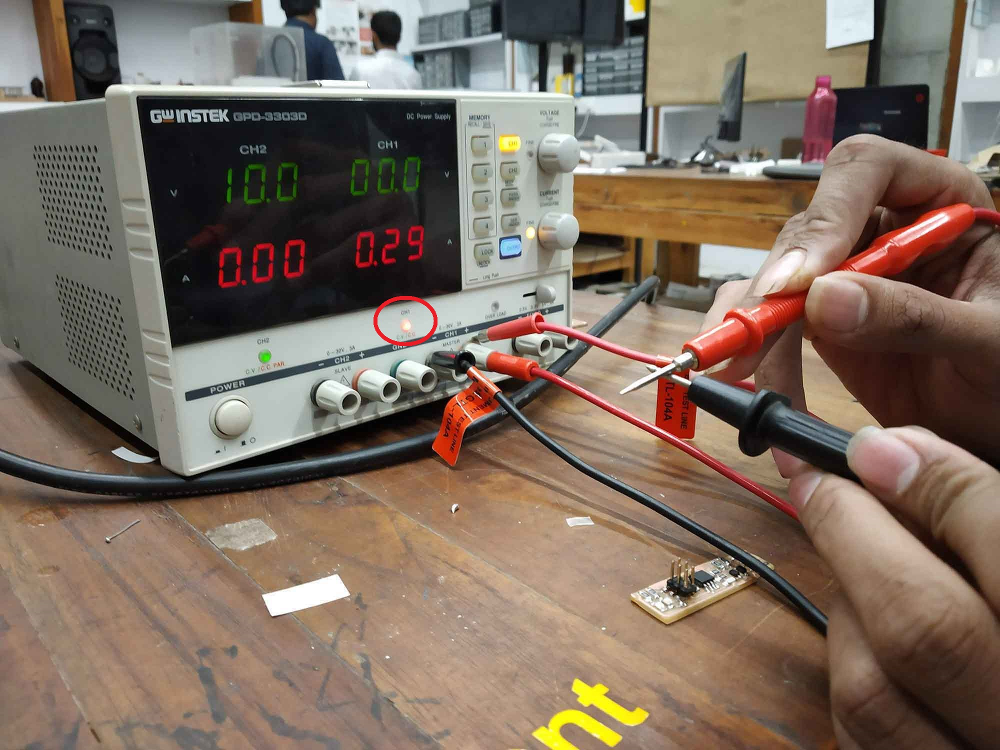See ! if i'm connecting two connectors directly it turns out red, means it is shorted.

Yes ! it is good for programming
STEP 11 : Programming the ISP-Board
Before starting the programming the ISP-Board i solders, i Connected my junctions! it is necessary process for programminng ISP Board.After validating the ISP i started programming it. I follow Adhitya-ss's page for programming isp. I used linux for that.
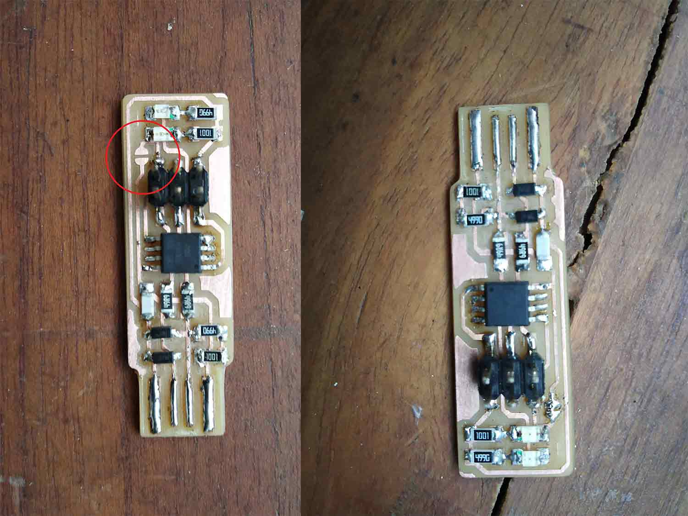Installing prerequisites
First i opened the terminal and and downloaded gcc and lib for compilation
in my machine i have already gcc-avr so didn't downloaded but here are the links for download.
Followed this step by step instruction to install gcc-avr
The following are the commands used.
sudo apt-get updatesudo apt-get upgrade allsudo apt-get install gcc-avr binutils-avr avr-libcsudo apt-get install gdb-avrsudo apt-get install avrdudeYou can also install all everything by
sudo apt-get install avrdude gcc-avr binutils-avr avr-libc makeI installed by this method
Once all the lib and avrdude is setup, its time to download the firmware.The firmware can be downloaded from the following link

Go to firmware location
Then i navigated to desktop by using
cd ~/ desktopunzip fts_firmware_bdm_v1.zip
I connected my ISP to the programmer. Plugged one end to the USB and the other on the header.
Green Light: means that the header is soldered correctly
Yellow Light: means that the board is getting power, but most likely the 6-pin programming header is not soldered correctly(reflow solder joints, check for correction)
Red Light: means that the board is not getting power - check for shorts(Buzzer test and Power test).
 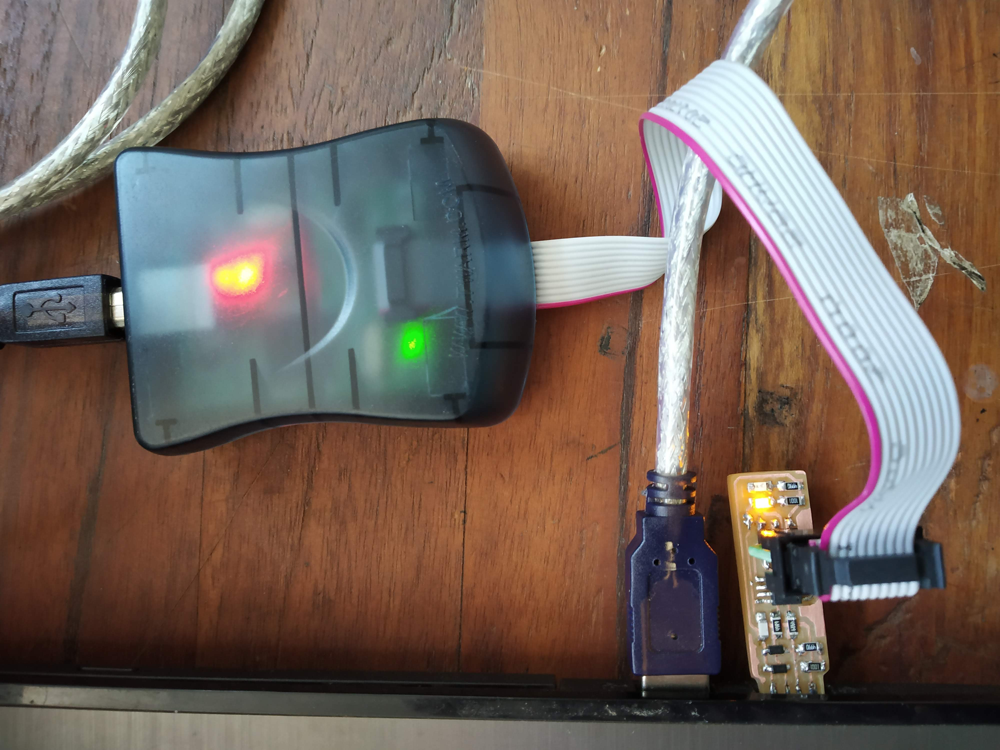
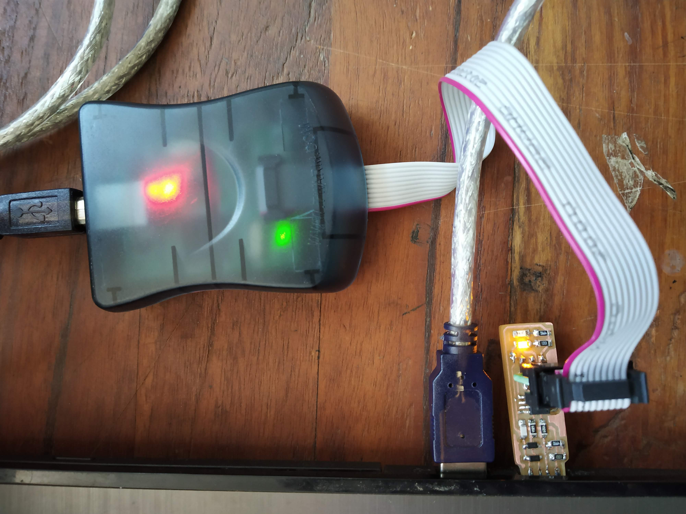
Light on avrisp2 is green, so my ISP is ready to be programmed.
STEP 12 : Editing Make file
This will build the .hex file that will get programmed onto the ATtiny45. First, update the Makefile for the type of programmer you're going to use to program your board. The Makefile, by default, assumes that you're going to use a programmer in the usbtiny family (e.g. another FabISP board). Other familier names are: avrisp2, jtag2isp
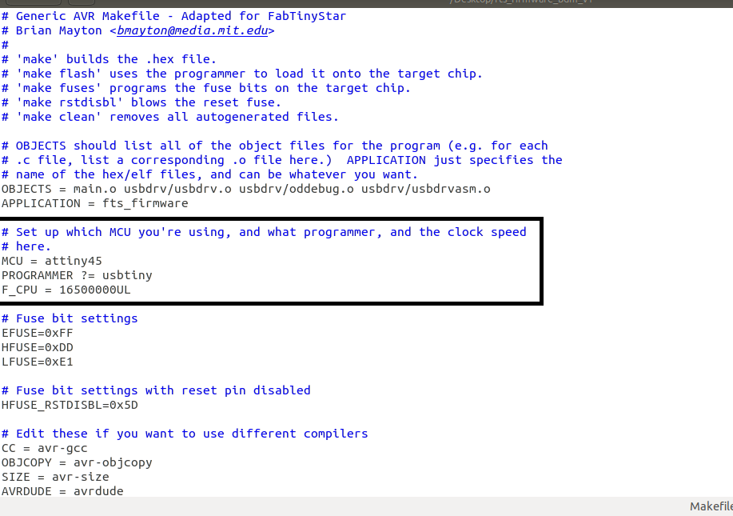If you want to program isp with another module keep this settings or give name of ("PROGRAMMER ?=") font-weight microcontrollers name.
If you want to program another ISP then changes It To "USBtinyspi"
STEP 13 : Make flash

STEP 14 : make fuses
This will set up all of the fuses except the one that disables the reset pin.

STEP 15 : lsusb
then plug out ISP from programmer and check it on the usb port then type lsusb, If you see a "Multiple Vendors USBtiny" device, it worked! If it didn't, the dmesg command might provide more info on what went wrong.
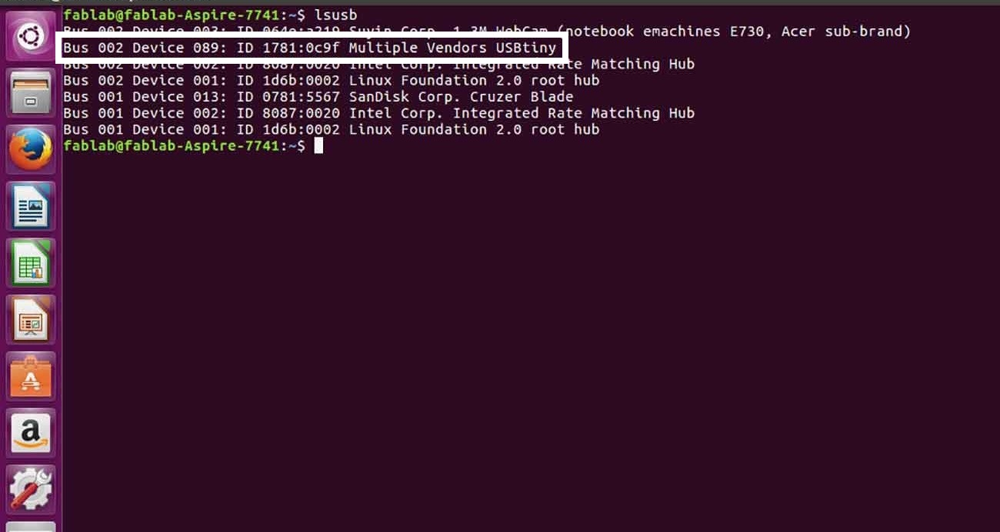STEP 16 : plugged in into laptop
Then i unsoldered the junction and plugged in into my pc to see if it recognize! and yes it recognized it.
Then i solder it again and connected isp to the board second time and run the code make rstdisbl. This does the
same thing as
the make fuses command, but this time it's going to include that reset disable bit as well. You should see some progress bars, and with that, avrdude will never be able to talk to this chip again through the ISP header.
now, we need to disconnect VCC from the Vprog pin on the ISP header by removing the bridge on the solder jumper. Sometimes the excess solder will stick to a clean soldering iron tip; if not, use desoldering
braid to remove the solder from the jumper, thus breaking the connection.

STEP 17 : Programming another ISP
Then i checked my isp by connecting another one, and it was working

Group work
this week's group assignment was to characterize the machine. Since pcb milling was very new to most of us , we started with understanding from the beginning , before going to machine we liked to see the specifications of this machine and
how we can use fab modules to use the Modela mdx-20.
in group work i specially focus on the machine specifications and its modeling capabilities , i was intended to test the parameters and see thier effects on the final output. i saw how i can do clean cut by just increasing the offset and
overlap. i knew it as low chances of breaking because it will cut lesser material in comperison. link for group work is Here.
conclusion :
This week was totally focused on learning new things, many new things i was applying in my Assignment specially Milling the circuit board, observing and understanding the Mdx-20, then doing soldering it was very good experience. i am still comfused about linux commands and about programming the microcontrollers but i will figure out that in up-coming weeks.